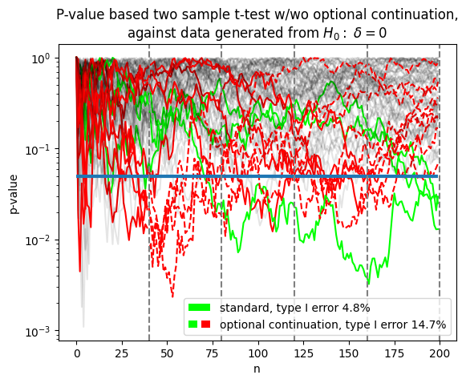
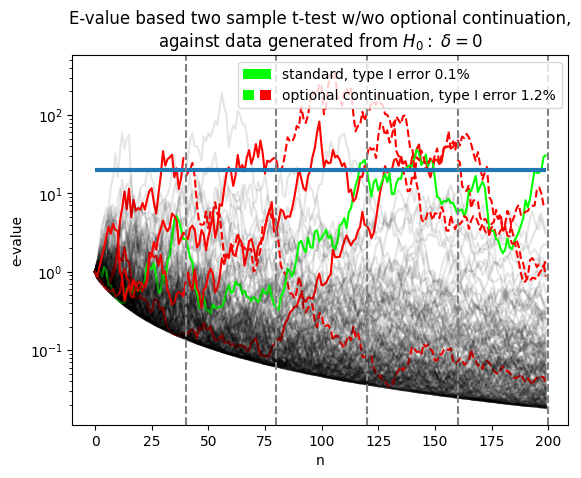

E-values supersede p-values
P-hacking #
P-hacking refers to the act of proclaiming a discovery based on p-values, when in fact the claimed discovery does not exist.
Are the below scientific studies examples of p-hacking?
-
Wennerholm et al.[1] wanted to know which practice is more beneficial to pregnant women: inducing baby delivery at 41 weeks, or waiting for a longer while?
They reported a significant p-value of 0.03 for inducing early at 41 weeks, but with a caveat: the experiment was stopped early after running for 2 years when 6 babies were born dead or died shortly after birth.
-
Carney et al.[2] suggested that power posing not only made people feel more confident, but actually also improved outcomes in the real world through higher levels of testosterone.
They reported a p-value of \(p<.05\) for increased risk taking among power posers, but in a later letter disclosed that this was obtained via
running subjects in chunks and checking the effect along the way.
The answer to both examples is yes, the p-values are invalid in the sense that the true Type I error rates (false-positives) are not less than 5%, but can be any number up to 100%.
Alarmingly, a recent survey[3] revealed that 56% of psychologists succumbed to the practice of deciding whether to collect more data after looking to see whether the results were significant
.
While collecting data until a desired p-value is obtained is obviously cheating, there are situations where the correct decision to be made is less clear:
What if you submit a paper and the referee asks you to test a couple more subjects?
Should you refuse because it invalidates your p-values!?
Conceptually, these difficulties faced by p-values stem from the fact that p-values depend on counterfactuals:
-
Suppose I plan to test a new medication on exactly 100 patients.
I do this and obtain a (just) significant result (\(p=0.03\) based on fixed \(n=100\)).
But just to make sure I ask a statistician whether I did everything right.
-
Now the statistician asks: what would you have done if your result had been 'almost-but-not-quite' significant?
-
I say
Well I never thought about that. Well, perhaps, but I'm not sure, I would have asked my boss for money to test another 50 patients
.
-
Now the statistician says: that means your result is invalid!
In other words, whether or not a test based on p-values is valid depends on what we would have done in situations that did not occur.
Conversely, say we observe a \(p=10^{-6}\), it is wrong to claim that we have rejected the null at say the incredible significance level of \(\alpha=2\times 10^{-6}\).
To get a Type-I error guarantee of \(\alpha\), we must set \(\alpha\) in advance, not after we have looked at the data.
Thus under the p-value paradigm, with \(\alpha\) set at 0.05 both \(p=10^{-6}\) and \(p=0.0499\) tell the same thing: that the Type-I error rate is 0.05.
This is a bit counterintuitive, we ought to be able to say more about our data when evidence suggests so.
This is achieved through e-values.
E-values allow optional continuation #
In the following, we will be focusing on the mom e-value defined in equation B4 of Ly et al.[4].
We will show that treating p-values as evidence and acting on it, leads to inflated Type-I errors.
In contrast, doing the same thing on e-values does not.
In particular, we simulate the scenario of:
- Research group A tests medication.
- Research group B sees results of A and decides:
- If research group A's p-value is below some threshold, then result is conclusive and study is stopped.
- Else, result is 'promising but not conclusive', so research group B tries again on new data.
- Research group C sees results from A and B, and goes through the same decision making process of continuing study or not.
- Research group D, E, F...
Figure 1 below shows what happens across 1000 simulations:


Figure 1: Simulation of p-value and e-value based two sample t-test with and without optional continuation.
Simulation and figure details
Left figure: P-value based tests.
X-axis is the number of collected data, and y-axis is the p-value.
Each trace contains data from a pair of Normal distributions whose difference in mean is \(\delta\).
The null hypothesis \(H_{0}\) is set to true, meaning \(\delta=0\).
The blue horizontal line denotes the continuation decision threshold of \(\alpha=0.05\).
Dashed vertical lines denote the end of each study, whose collected data size is 40.
At the end of each study, p-values are examanied, and subsequent studies are canceled if the p-value is less than \(\alpha\).
For the non-existent hypothetical studies, dashed lines are used to mark their traces.
Traces whose p-values are below \(\alpha\) rejecting the null, at the end of the last study are colored green.
Traces that rejected the null in the interim, but not at the end of the last study are colored red.
Type-I errors are calculated as \(\frac{\text{# of null rejections}}{\text{# of simulations}}\).
Right figure: e-value based tests. For e-values, the criterion for rejecting the null hypothesis is \(e_{n} > \frac{1}{\alpha}\). The blue horizontal line denotes the threshold \(\frac{1}{\alpha}\).
From Figure 1, we see that when the assumptions of traditional hypothesis testing are met, p-value based tests uphold their guarantee of Type-I error 4.8% less than \(\alpha=5\%\).
However, when optional continuation is introduced the Type-I error jumps to 14.7%, due to the fact that data between studies are no longer independent.
Such increase in false positives lie at the heart of the replication crisis in modern science.
E-values in contrast, control the Type-I error below \(\alpha\) at all times, even under optional continuation.
By viewing each data point as its own study, the same can be said for the case under optional stopping.
From a theoretical perspective, the reason why p-values break down with optional continuation is because, under the null hypothesis, p-values are uniformly distributed as can be seen from Figure 1.
Since p-values are uniformly distributed under the null, they fluctuate freely between zero and one, and would always eventually dip below any \(\alpha\) threshold.
On the other hand, under the null, e-processes are non-increasing and typically would drift towards zero.
In fact, mathematically speaking e-values represent the accumulated wealth of a gambler playing in a multi-round game, in which no money is expected to be gained if the null hypothesis holds true:
with the convention \(E_{1}=1\), for any stopping time \(N\), \(\mathbb{E}_{H_{0}}\left[ E_{N}\le 1\right]\),
where \(\mathbb{E}_{H_{0}}\left[ \cdots\right]\) denotes taking the expectation of a random variable with respect to the null hypothesis \(H_{0}\).
Although, e-values remain relatively unknown among the broader scientific community, there has been a few successful real world applications of e-values to date.
For example, Rosanne Turner et al.[5] showed that if e-values were used in the labour induction study discussed above^,
researchers in that study would likely have stopped the experiment earlier saving one or two stillborn children, without compromising the statistically validity of their findings.
In conclusion, E is the new P, and we should be using e-values instead of p-values going forward.
Reference
-
^
Wennerholm U, Saltvedt S, Wessberg A, Alkmark M, Bergh C, Wendel S B et al. Induction of labour at 41 weeks versus expectant management and induction of labour at 42 weeks (SWEdish Post-term Induction Study, SWEPIS): multicentre, open label, randomised, superiority trial BMJ 2019; 367 :l6131 doi:10.1136/bmj.l6131
-
^
Carney DR, Cuddy AJ, Yap AJ. Power posing: brief nonverbal displays affect neuroendocrine levels and risk tolerance. Psychol Sci. 2010 Oct;21(10):1363-8. doi:10.1177/0956797610383437
-
^
John LK, Loewenstein G, Prelec D. Measuring the prevalence of questionable research practices with incentives for truth telling. Psychol Sci. 2012 May 1;23(5):524-32. doi:10.1177/0956797611430953
-
^
Alexander Ly, U. Boehm, G., A. Ramdas, D. van Ravenzwaaij. Safe Anytime-Valid Inference: Practical Maximally Flexible Sampling Designs for Experiments Based on e-Values. doi.org/10.31234/osf.io/h5vae
-
^
Rosanne J. Turner, Alexander Ly, Peter D. Grunwald, Generic E-variables for exact sequential k-sample tests that allow for optional stopping, Journal of Statistical Planning and Inference, Volume 230, 2024, https://doi.org/10.1016/j.jspi.2023.106116